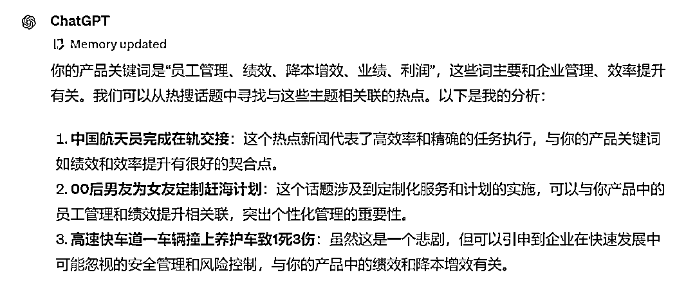
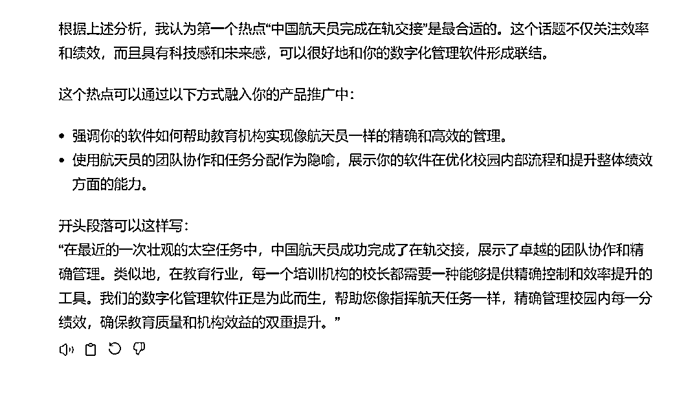
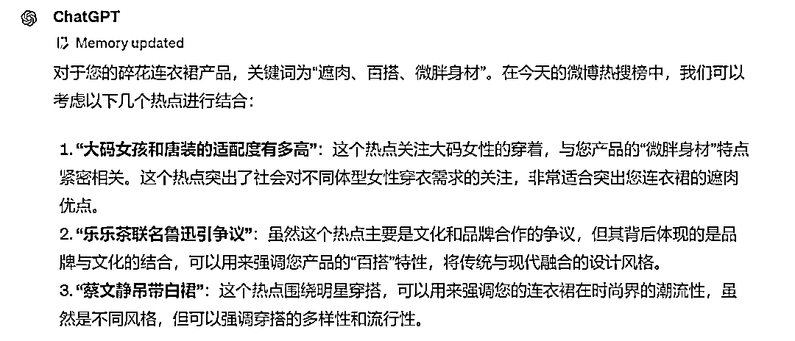
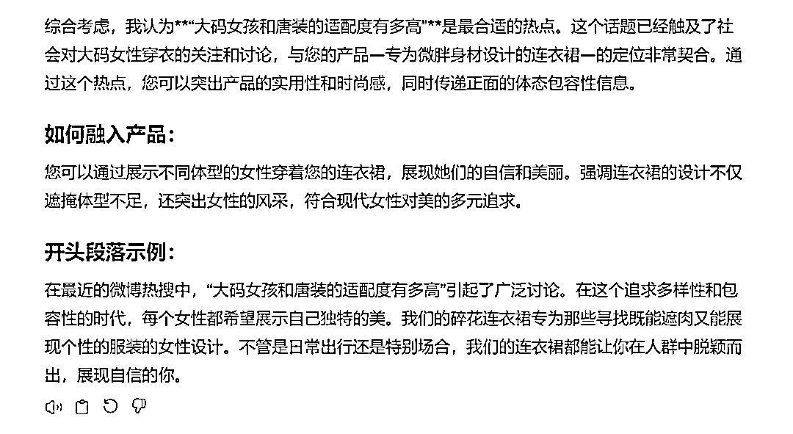
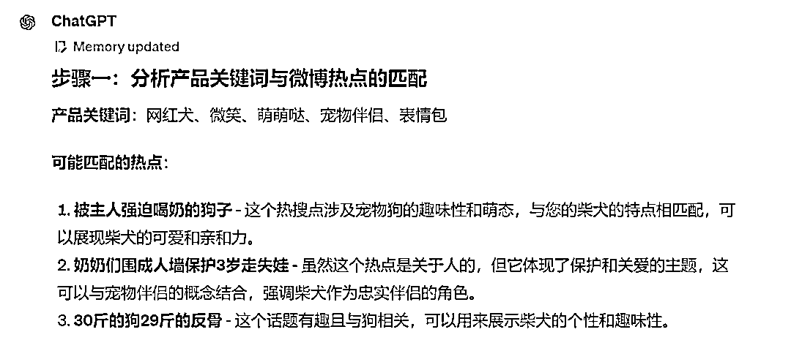
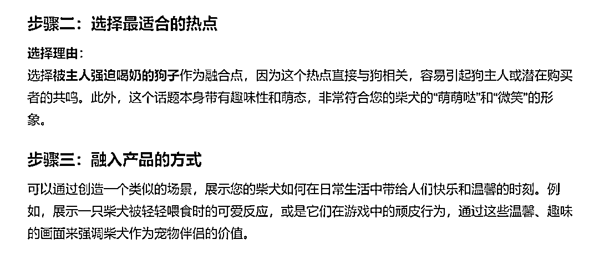

来源：https://balfcirt91j.feishu.cn/docx/URkFdaNDGoy7AixXIxVckFOTnbh
经常刷朋友圈、短视频的同学，一定见过这种现象：今天有什么热点，比如明星出轨了、某知名公司暴雷了，一定会有一批自媒体博主率先跟上这些热点，以此获取流量。
除了自媒体、品牌也喜欢追热点，比如杜蕾斯，瑞幸，经常就会蹭各种热点。
其实，追热点最难的是，如何找到切入点。
如果切入得很生硬，则会让人觉得这个品牌很LOW。
每天互联网上的热点这么多，我们如何快速地找到适合切入的热点呢？ChatGPT来帮忙。
来看下我的操作：
https://tophub.today/，这是一个热点集合的网站。
把当天微博上的热点复制下来，比如4月29日的热点是：
2、夫妻婚后无夫妻之实离婚女方判还32万彩礼 (165.1万)
3、这2天班非上不可吗 (123.3万)
4、中国航天员完成在轨交接 (100.1万)
5、都敏俊转世 (剧集 854530)
6、古天乐坚持十多年每天只吃一顿饭 (80.7万)
7、河北下雪 (74.0万)
8、假日限定超燃乐园
9、眼泪女王女主死了 (剧集 554194)
10、高铁WiFi弹出骂人脏话国铁吉讯致歉 (54.9万)
11、00后男友为女友定制赶海计划 (53.0万)
12、男子曾获老师无偿资助回母校捐款50万 (50.2万)
13、警方通报女孩凌晨被拽进卫生间殴打 (50.0万)
14、睡眠不足的9大表现 (41.6万)
15、张颂文回应砍价被吐槽穷酸 (综艺 412874)
16、客户买房后无法上学中介称我口误 (39.5万)
17、iPhone16系列全新摄像头模组 (39.3万)
18、问界M7追尾的养护车当时正浇水作业 (37.5万)
19、谁家he男主给女主扫墓啊 (剧集 340882)
20、本周狗屎运最旺的星座 (24.5万)
21、歌手2024 (综艺 233168)
22、居然还有女用避孕套 (22.0万)
23、史上最忙五一为何机票价格跳水 (22.0万)
24、五一1500元机票跳水至400 (21.8万)
25、从胃病到胃癌的报警症状 (21.7万)
26、民宿涨价1500后被退单平台只赔230 (21.6万)
27、陈丽君上桌了 (综艺 215699)
28、背着善宰跑 (剧集 212108)
29、张雨绮是怎么发现这个赛道的 (19.0万)
30、为什么有人运动上脸 (18.8万)
31、蔡文静吊带白裙 (18.7万)
32、乐乐茶联名鲁迅引争议 (18.2万)
33、女子照片被烈士紧握网友称是其二姑奶奶 (18.0万)
34、孙颖莎爷爷奶奶缘有多好 (17.1万)
35、30斤的狗29斤的反骨 (16.8万)
36、奶奶们围成人墙保护3岁走失娃 (16.7万)
37、被主人强迫喝奶的狗子 (16.5万)
38、女生手捧烧烤花束送大四毕业同学 (15.9万)
39、林允的老公姐选择了张雨绮 (综艺 154986)
40、我未杀伯仁 伯仁却因我而死 (剧集 153054)
41、高速快车道一车辆撞上养护车致1死3伤 (14.9万)
42、宋雨琦 反正他们听不懂 (14.7万)
43、亲人的离世不是一时的暴雨 (14.5万)
44、女子在丈夫按摩后长巨大肿块 (14.4万)
45、天和核心舱出征太空3周年 (14.4万)
46、彭昱畅叮嘱胡先煦好好照顾张子枫 (电影 137987)
47、大码女孩和唐装的适配度有多高 (13.5万)
48、长期吃榴莲身体会发生什么变化 (13.1万)
49、金智媛值得 (剧集 114776)
50、童瑶露腰扯面 (剧集 113762)
51、卢昱晓束发古装 (剧集 112927)
52、民警徒步4小时帮女子找回黄金首饰 (10.2万)
要自然地与热点搭上关系，需要先把你的产品或者你的品牌，与之相关的关键词梳理出来。
比如，你是做数字化管理软件的，那么关键词就是：
员工管理、绩效、降本增效、业绩、利润……
梳理得越多越好。然后再用这些关键词，一一和热点去比对，看看哪个能对上。
有了这样的思路，接下来，就可以训练ChatGPT了。
我是做XXX的，我的目标人群是XXX，我这个产品的关键词是：XXX、我想写一篇结合热点的文章，发到我的公众号上，我看到今天微博的热点是：（输入进去）你是一个善于做热点结合的文案高手，你写过1000篇热点结合产品的文章，你来给我做热点的结合，以推广我的XXX产品。
任务步骤：1.先了解我的产品关键词，分析下这些关键词，和哪些热点可以匹配起来，并说明理由；
2.从步骤一种分析出一个最适合的热点，并说明理由
3.分析这个热点可以如何融入我的产品4.写一段开头，结合热点融入产品
1.数字化管理软件
目标人群：培训机构的校长
关键词：员工管理、绩效、降本增效、业绩、利润


2.碎花连衣裙
目标人群：25—30岁的年轻女性
关键词：遮肉、百搭、微胖身材


3.柴犬犬舍
目标人群：25至40岁的单身女性
关键词：网红犬、微笑、萌萌哒、宠物伴侣、表情包


怎么样，追热点是不是一点都不难了呢？
我是菜菜，13年互联网内容营销经验，三节课特邀AI内容营销讲师，人人都是产品经理专栏作者。
生财有术chatGPT航海教练，目前专注在AI+营销内容创作上，指导和帮助个人IP、创业团队、企业高效高质地创作营销内容。
V：38361152，加我请说明来意